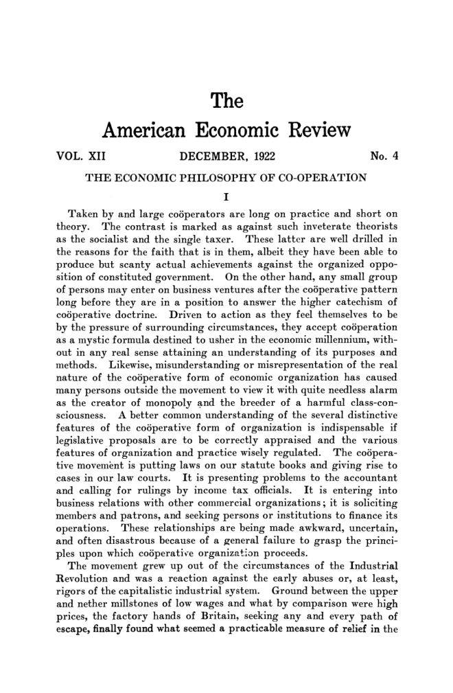

Nourse e os três princípios da cooperação
Leitura: 8 min
Eficiência, sobras e voto: Nourse examina o que a cooperação promete, onde ela tropeça e por que, nos Estados Unidos, o seu campo principal é a agricultura.


Numa loja sem vitrine em Toad Lane, os pioneiros de Rochdale vendiam à vista e com a ajuda voluntária dos sócios. E. G. Nourse, do Iowa State College, usa essa imagem como ponto de partida para um exame sistemático do que chama de filosofia econômica da cooperação. Sua constatação inicial é que os cooperados agem antes de entender a doutrina, enquanto muitos de fora veem o movimento, sem necessidade, como criador de monopólio e de uma consciência de classe nociva. Essa falta de entendimento, diz, já torna incertas as relações do movimento com legisladores, tribunais, contadores e fiscais do imposto de renda.
De onde vêm os três fundamentos?
O movimento, lembra Nourse, nasceu da Revolução Industrial, como reação aos rigores do sistema fabril. Os operários britânicos, apertados entre salários baixos e preços altos, encontraram alívio nas lojas sem fins lucrativos do modelo de vinte e oito tecelões de Rochdale. Três fundamentos teriam sustentado o êxito: eficiência, com venda sem crédito, sem angariação e com serviço gratuito ou pouco pago dos membros; distribuição popular das sobras, com juro mínimo ao capital e o excedente pago como dividendo de compra e de trabalho; e controle democrático, com voto individual.
Esses princípios registram, segundo o autor, um protesto triplo: contra os custos e desperdícios do sistema competitivo de vendas, contra o capital como credor residual dos lucros e contra a identificação do controle com a propriedade de ações. O artigo examina cada aspecto por vez.
A cooperativa é mais eficiente?
Na eficiência, Nourse separa a economia que só corta serviço, que não é ganho real, do ataque aos desperdícios da concorrência. Ao reunir os pedidos do grupo consumidor e orientar distribuição e produção pelas necessidades de quem compra, a loja cooperativa afirma que o negócio deve ser meio, e não fim. O autor dá voz ao consumidor que pergunta por que pagar marcas duplicadas, caixeiros-viajantes, publicidade e comerciantes redundantes.
“O comércio de todas essas lojas não passa da reunião de bens para satisfazer as minhas necessidades.” (“The trade of all these stores is nothing more than the assembling of goods to satisfy my wants.”)
O mesmo argumento vale para produtores. O fazendeiro pergunta por que sustentar sete compradores locais de gado quando um agente organizaria os embarques. Numa região nova, longe dos mercados e com produto perecível, a associação consegue o que o distribuidor privado não faz. E na produção multiplicaram-se as associações de serviço, das que reuniam capital para levar a debulha a vapor à pequena fazenda às de pulverização e controle leiteiro.
Quem fica com a sobra?
Na cooperativa, o lucro não vai como dividendo das ações, mas como dividendo de compra, ou de trabalho. O capital recebe a taxa corrente, e o membro que compra, vende ou trabalha é o credor residual. Nourse vê aí uma confusão entre o capitalismo como categoria de distribuição e o grande capitalista: a objeção do cooperado é ao acúmulo de dividendos excessivos e às ações infladas, não ao juro de mercado. Organizados os clientes, o risco sai do negócio, e a sobra que aparecer é cobrança a mais, devolvida depois das reservas e de um fundo educacional.
A cooperação seria então favorável ao trabalho? O autor responde que é um movimento da classe trabalhadora, mas com adesão imperfeita a uma teoria trabalhista da distribuição. O dividendo ao trabalho é letra morta na prática; a Co-operative Wholesale Society britânica teve greves em suas fábricas; sociedades de produtores e de consumidores entraram em conflito. Nos Estados Unidos, o fazendeiro quer retorno também sobre o capital investido, e um dos motivos do surto cooperativo agrícola seria manter o preço da terra.
Daí o que Nourse chama de cooperação militante, em oposição à cooperação utópica da velha escola: princípios cooperativos dentro do grupo, barganha competitiva fora dele. A Associated Raisin Growers of California, exemplo citado, adotou o voting trust e entrou em choque com a Federal Trade Commission. O autor espera que o elemento mais sólido do movimento repudie essas ideias predatórias.
Quem manda numa cooperativa?
Na sociedade anônima, o controle acompanha o capital e tende a concentrar-se: ações preferenciais sem voto, credores de títulos sem voz, procurações, holdings e voting trusts. A cooperação opõe três contrapropostas: todo capital investido vira fundo de empréstimo, sem voto, e o voto vai aos membros que participam do negócio; procurações são proibidas, a quantidade de ações por pessoa é limitada e cada membro vota como indivíduo; e o quadro de membros fica aberto a quem exerce a atividade, terminando quando ele a deixa.
“A associação cooperativa é uma união de pessoas, enquanto a sociedade anônima é uma união de capitais.” (“the cooperative association is a union of persons, whereas the joint stock company or corporation is a union of capitals”)
O princípio de um homem, um voto às vezes é ajustado à proporção do movimento, por vacas ou peso de leite numa associação de laticínios, por árvores ou caixas de fruta numa de horticultura. Mas permanece a ideia de que a filiação é pessoal e de que a riqueza não deve ter peso adicional: o cooperado, resume Nourse, acredita que a democracia vale tanto na economia quanto na política.
A cooperação pode substituir o mercado?
O teste, diz o autor, é pragmático. Levadas ao extremo, as propostas cooperativas montam uma nova máquina de fazer preços. O trabalhador quer o valor integral de seu trabalho no preço ao consumidor; o consumidor quer apropriar-se de tudo acima do preço de mercado dos serviços e materiais. Um não pode tomar como dado o preço do outro. Em nota, Nourse observa que o intermediário mantém um terreno neutro onde oferta e demanda se igualam, e que mesmo as vendas diretas dependem das cotações desse mercado.
Mill esperava da cooperação de trabalhadores uma transformação favorável à justiça social. A história, diz o autor, desmentiu a expectativa, pela técnica industrial, que exigia equipamento cada vez maior e mais caro, e pela situação do assalariado, sem capital para reinvestir; o sindicalismo pareceu-lhe caminho mais rápido.
A cooperação de consumidores, dominante na Inglaterra e na Escócia, integrou atacado e importação, montou fábricas, plantações de chá, navios e departamentos bancários. Levada à comunidade cooperativa que dirigisse toda a economia, passaria, para Nourse, da associação voluntária ao socialismo coercitivo. Ainda assim, sua presença seria um estímulo valioso e uma salvaguarda contra exploração e ineficiência.
Por que a agricultura é o caso americano?
Cooperação agrícola, explica Nourse, não é lavoura coletiva, mas a associação de fazendeiros para as partes do negócio que não podem fazer sozinhos. O ponto de vista é o da reorganização funcional, e não o da regeneração econômica. O fazendeiro, trabalhador por conta própria e pequeno capitalista, aceita os fatos do mercado e procura apenas a posição mais eficaz diante dele. Por isso a facção cooperativa é a ala conservadora da agricultura.
A lógica é de escala. O criador precisa concentrar a venda para enfrentar nos currais o poder de compra dos cinco grandes frigoríficos; os produtores de leite, que criaram a cooperativa local contra a pequena usina privada, enfrentam agora grandes empresas que anunciam direto ao consumidor, e precisam de federações regionais. Os cooperativistas de consumo acusam essa cooperação de ser tão exploradora quanto o produtor capitalista; o autor admite o risco, mas vê perigo igual em reduzir a produção a atender pedidos.
O perigo de monopólio na agricultura americana, diz, é praticamente desprezível, e o quadro aberto de membros é salvaguarda adicional. Melhores retornos estimulam a produção e baixam o preço ao consumidor, às vezes a ponto de ameaçar as próprias associações. Nourse conclui que, se o objetivo de Mill é fazer do trabalhador também dono do capital de sua atividade, a cooperação agrícola, que preserva a combinação de capitalista e trabalhador no fazendeiro, merece ser cultivada, e que analisar suas questões seria tarefa própria do economista.
Na minha leitura
Na minha leitura, o artigo trata a cooperativa como uma solução para três problemas distintos de organização: custo de transação, repartição do excedente e governança. Os ganhos de eficiência que Nourse aceita vêm da agregação da demanda ou da oferta e da escala; os que ele recusa são só redução de serviço. A distinção é útil para qualquer comparação entre formas de empresa.
O ponto mais forte é o argumento sobre preços. Sem um mercado de referência, produtores e consumidores organizados não têm como dividir a margem, e a cooperação passa a depender das cotações do sistema que pretendia substituir. É por isso que o autor encontra na agricultura, onde a cooperativa aceita o preço de mercado e muda apenas a posição do produtor diante dele, o caso mais viável.
Glossário
- Dividendo de compra (patronage dividend)
- devolução da sobra aos membros na proporção de seu movimento com a cooperativa.
- Copropriedade operária (labor copartnership)
- empresa em que os trabalhadores participam do capital e dos lucros.
- Voting trust
- arranjo em que acionistas transferem o direito de voto a um grupo de fiduciários.
- Credor residual
- quem fica com o que sobra depois de pagas as parcelas contratuais.
- Lojas em cadeia
- redes de lojas de um mesmo dono, com compras centralizadas.
Fontes
- The Economic Philosophy of Co-operation — E. G. Nourse (Iowa State College) (pp. 577–597). JSTOR · Internet Archive (PDF)
- Edição completa, com os demais artigos: Nº 179 do Arquivo.
Documento em domínio público (EUA, publicado antes de 1931), via JSTOR Early Journal Content e Internet Archive. Resumo e comentário do autor deste site, sem afiliação com a American Economic Association. Encontrou um erro? Escreva: a correção é publicada no próprio texto, com data.
↑ Nº 179 · Nourse, as cooperativas, a crise da teoria e a base tarifária Boucke e a teoria econômica sem a velha psicologia →